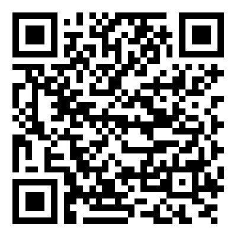
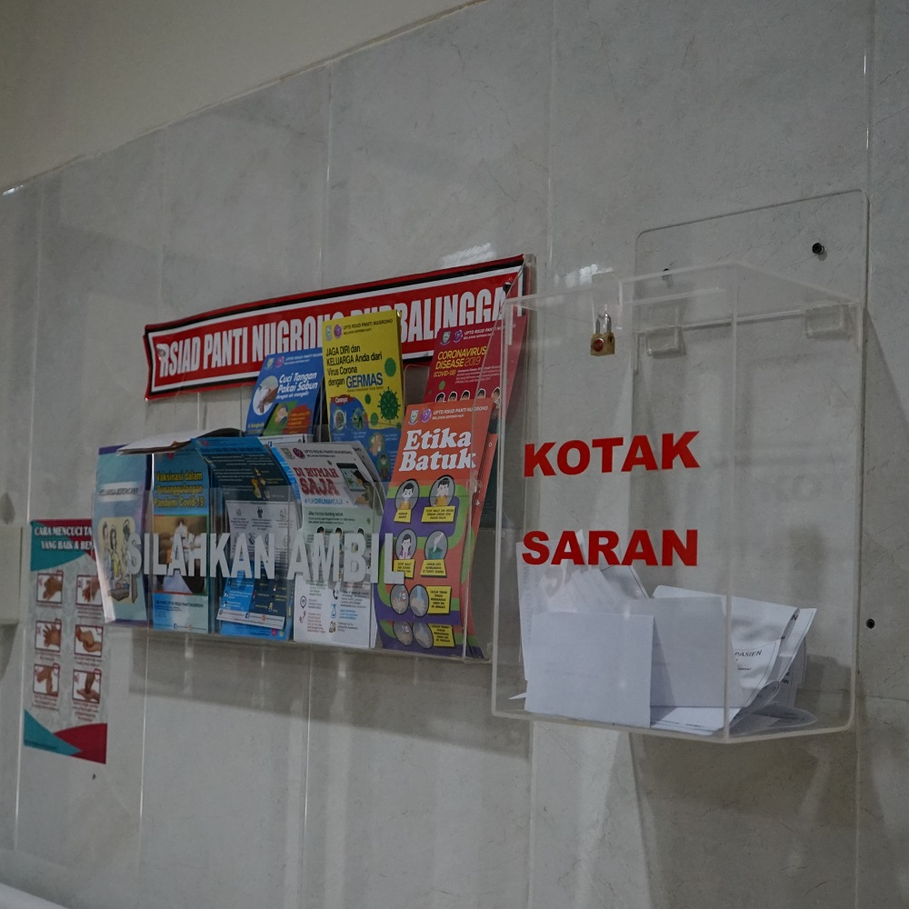

Kembali
*Untuk membuka Keyboard, klik icon di pojok kanan bawah
Form Kepuasan Pasien
Memuat…
Barcode Survei Kepuasan Pasien
Anda juga dapat mengisi Survei Kepuasan Pasien dengan Smartphone Anda, silahkan scan barcode disamping untuk mengisi Survei Kepuasan Pasien.

Layanan Hotline RSUD Panti Nugroho Purbalingga
Hubungi Layanan Hotline RSUD Panti Nugroho Purbalingga
dibawah ini :
dr. Wiwin Dyah Priwanti
Tidak Tersedia Sementara
Teguh Triono Harsoko, S.Kep
0823-1483-6366
Fasilitas Kotak Saran

Anda juga dapat mengirimkan kritik dan saran melalui
Kotak Saran
yang tersebar di lingkungan RSUD Panti Nugroho